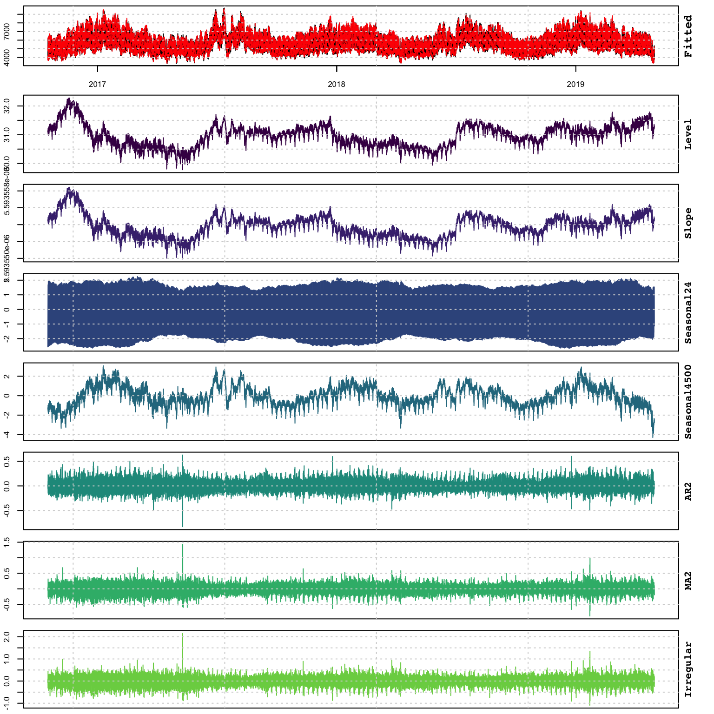
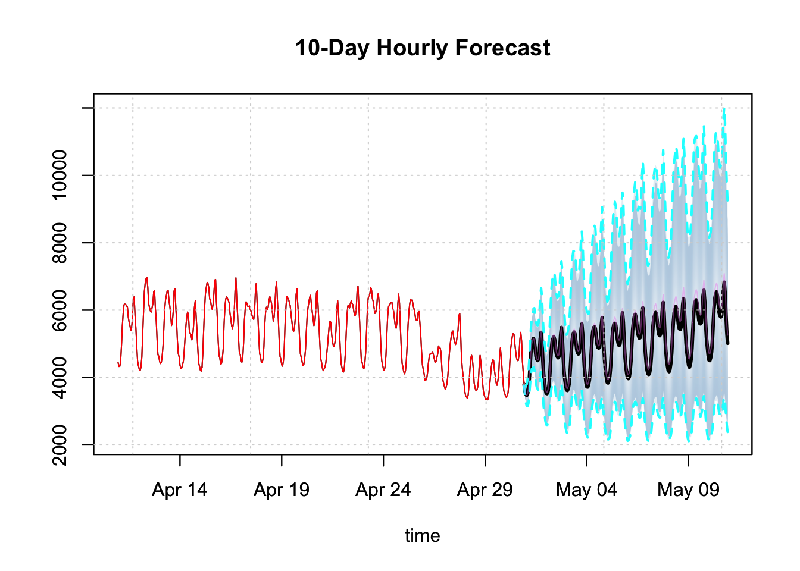
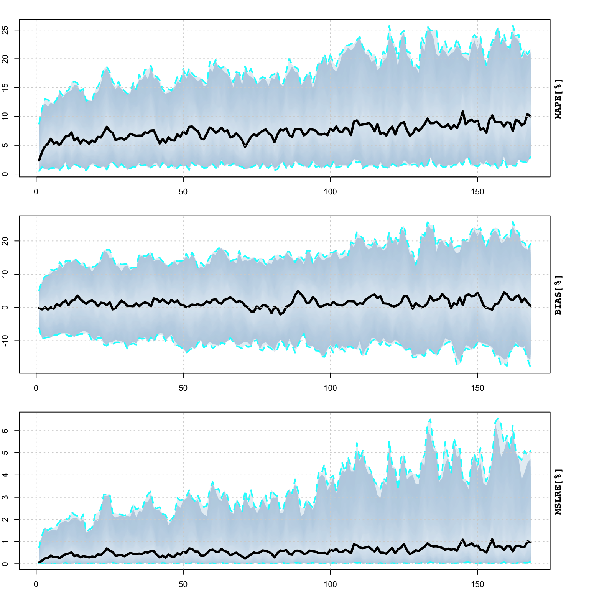

Chapter 5 tsissm package
5.1 Introduction
The tsissm package implements the linear (and homoscedastic) innovations state space model described in De Livera, Hyndman, and Snyder (2011) and originally proposed by Anderson and Moore (2012). It is in some ways similar to the ETS based models described in R. Hyndman et al. (2008), but with the flexibility of incorporating multiple seasonality, ARMA terms and joint maximization of the Box Cox variance stabilizing lambda parameter.
The following is taken from De Livera, Hyndman, and Snyder (2011). Consider the following SEM model:
\[\begin{equation} \begin{array}{l} y_t^\lambda = {\bf{w'}}{{\bf{x}}_{t - 1}} + \bf{c'}\bf{u}_{t - 1} + {\varepsilon _t}, \quad \varepsilon_t\sim N\left(0,\sigma^2\right),\\ {{\bf{x}}_t} = {\bf{F}}{{\bf{x}}_{t - 1}} + {\bf{g}}{\varepsilon _t}, \end{array} \tag{5.1} \end{equation}\]
where \(\lambda\) represents the Box Cox parameter, \(\bf{w}\) the observation coefficient vector, \(\bf{x}_t\) the unobserved state vector, \(\bf{c}\) a vector of coefficients on the external regressor set \(\bf{u}\).
Define the state vector10 as:
\[\begin{equation} \bf{x}_t = {\left( {{l_t},{b_t},s_t^{(1)},\dots,s_t^{(T)},{d_t},{d_{t - 1}},\dots,{d_{t - p - 1}},{\varepsilon_t},{\varepsilon_{t - 1}},\dots,{\varepsilon _{t - q - 1}}} \right)^\prime }, \tag{5.2} \end{equation}\]
where \(\bf{s}_t^{(i)}\) is the row vector \(\left( {s_{1,t}^{(i)},s_{2,t}^{(i)},\dots,s_{{k_i},t}^{(i)},s_{1,t}^{*(i)},s_{2,t}^{*(i)},\dots,s_{{k_i},t}^{*(i)}} \right)\) in the case of trigonometric seasonality, and \(\left( {s_t^{(i)},s_{t - 1}^{(i)},\dots,s_{t - ({m_i} - 1)}^{(i)}} \right)\) in the case of regular seasonality. Also define \(\bf{1}_r\) and \(\bf{0}_r\) as a vector of ones and zeros, respectively, of length \(r\), \(\bf{O}_{u,v}\) a \(u\times v\) matrix of zeros and \(\bf{I}_{u,v}\) a \(u\times v\) diagonal matrix of ones; let \(\mathbf{\gamma} = \left(\mathbf{\gamma}^{(1)},\dots,\mathbf{\gamma}^{(T)} \right)\) be a vector of seasonal parameters with \({\gamma ^{(i)}} = \left( {\gamma _1^{(i)}{{\bf{1}}_{{k_i}}},\gamma _2^{(i)}{{\bf{1}}_{{k_i}}}} \right)\) in the trigonometric seasonality case (with \(k\) harmonics), and \({\gamma ^{(i)}} = \left( {{\gamma _i},{{\bf{0}}_{{m_i} - 1}}} \right)\) in the regular seasonality case; define \(\theta = \left( {{\theta_1},{\theta_2},\dots,{\theta _p}} \right)\) and \(\psi = \left( {{\psi _1},{\psi _2},\dots,{\psi_q}} \right)\) as the vector of AR(p) and MA(q) parameters, respectively. Define the observation transition vector \({\bf{w}} = {\left( {1,\phi ,{\bf{a}},\theta ,\psi } \right)^\prime }\), where \({\bf{a}} = \left( {{{\bf{a}}^{(1)}},\dots,{{\bf{a}}^{(T)}}} \right)\) with \({{\bf{a}}^{(i)}} = \left( {{{\bf{1}}_{{k_i}}},{{\bf{0}}_{{k_i}}}} \right)\) for the trigonometric case and \({{\bf{a}}^{(i)}} = \left( {{{\bf{0}}_{{m_i} - 1}},1} \right)\) for the regular seasonality case. Define the state error adjustment vector \({\bf{g}} = {\left( {\alpha ,\beta ,\gamma ,1,{{\bf{0}}_{p - 1}},1,{{\bf{0}}_{q - 1}}} \right)^\prime }\). Further, let \({\bf{B}} = \gamma '\theta\), \({\bf{C}} = \gamma '\psi\) and \({\bf{A}} = \oplus _{i = 1}^T{{\bf{A}}_i}\), with
\[\begin{equation} {{\bf{A}}_i} = \left[ {\begin{array}{*{20}{c}} {{{\bf{C}}^{(i)}}}&{{{\bf{S}}^{(i)}}}\\ { - {{\bf{S}}^{(i)}}}&{{{\bf{C}}^{(i)}}} \end{array}} \right], \tag{5.3} \end{equation}\]
for the trigonometric case and with \(\bf{C}^{(i)}\) and \(\bf{S}^{(i)}\) representing the \(k_i\times k_i\) diagonal matrices with elements \(cos(\lambda_j^{(i)})\) and \(sin(\lambda_j^{(i)})\) respectively,11 and
\[\begin{equation} {{\bf{A}}_i} = \left[ {\begin{array}{*{20}{c}} {{{\bf{0}}_{{m_i} - 1}}}&1\\ {{{\bf{I}}_{{m_i} - 1}}}&{{{{\bf{0'}}}_{{m_i} - 1}}} \end{array}} \right], \tag{5.4} \end{equation}\]
for the regular seasonality case, with \(\oplus\) being the direct sum of matrices operator. Finally, the state transition matrix \(\bf{F}\) is composed as follows:
\[\begin{equation} {\bf{F}} = \left[ {\begin{array}{*{20}{c}} 1&\phi &{{{\bf{0}}_\tau }}&{\alpha \theta }&{\alpha \psi }\\ 0&\phi &{{{\bf{0}}_\tau }}&{\beta \theta }&{\beta \psi }\\ {{{{\bf{0'}}}_\tau }}&{{{{\bf{0'}}}_\tau }}&{\bf{A}}&{\bf{B}}&{\bf{C}}\\ 0&0&{{{\bf{0}}_\tau }}&\theta &\psi \\ {{{{\bf{0'}}}_{p - 1}}}&{{{{\bf{0'}}}_{p - 1}}}&{{{\bf{O}}_{p - 1,\tau }}}&{{{\bf{I}}_{p - 1,p}}}&{{{\bf{O}}_{p - 1,q}}}\\ 0&0&{{{\bf{0}}_\tau }}&{{{\bf{0}}_p}}&{{{\bf{0}}_q}}\\ {{{{\bf{0'}}}_{q - 1}}}&{{{{\bf{0'}}}_{q - 1}}}&{{{\bf{O}}_{q - 1,\tau }}}&{{{\bf{O}}_{q - 1,p}}}&{{{\bf{I}}_{q - 1,q}}} \end{array}} \right] \tag{5.5} \end{equation}\]
where \(\tau = 2\sum\limits_{i = 1}^T {{k_i}}\) for the trigonometric case and \(\tau = \sum\limits_{i = 1}^T {{m_i}}\) for the regular seasonality case.
5.2 State Initialization
A key innovation of the De Livera, Hyndman, and Snyder (2011) paper is providing the exact initialization of the non-stationary component’s seed states, the exponential smoothing analogue of the De Jong and others (1991) method for augmenting the Kalman filter to handle seed states with infinite variances. The proof, based on De Livera, Hyndman, and Snyder (2011) and expanded here is as follows:
Let:
\[\begin{equation} {\bf{D}} = {\bf{F}} - {\bf{gw'}}. \tag{5.6} \end{equation}\]
We eliminate \(\varepsilon_t\) in (5.1) to give:
\[\begin{equation} {{\bf{x}}_t} = {\bf{D}}{{\bf{x}}_{t - 1}} + {\bf{g}}{y_t}. \tag{5.7} \end{equation}\]
Next, we proceed by backsolving the equation for the error, given a given value of \(\lambda\):12
\[\begin{equation} \begin{array}{l} {\varepsilon _t} = {y_t} - {\bf{w}}{{{\bf{\hat x}}}_{t - 1}},\\ {\varepsilon _t} = {y_t} - {\bf{w'}}\left( {{\bf{D}}{{{\bf{\hat x}}}_{t - 2}} + {\bf{g}}{y_{t - 1}}} \right). \end{array} \tag{5.8} \end{equation}\]
Starting with \(t = 4\) and working backwards:
\[\begin{equation} \begin{array}{l} {\varepsilon _4} &= {y_4} - {\bf{w'}}\left( {{\bf{D}}{{{\bf{\hat x}}}_2} + {\bf{g}}{y_3}} \right)\\ &= {y_4} - {\bf{w'}}\left( {{\bf{D}}\left( {{\bf{D}}{{{\bf{\hat x}}}_1} + {\bf{g}}{y_2}} \right) + {\bf{g}}{y_3}} \right)\\ &= {y_4} - {\bf{w'}}\left( {{\bf{D}}\left( {{\bf{D}}\left( {{\bf{D}}{{{\bf{\hat x}}}_0} + {\bf{g}}{y_1}} \right) + {\bf{g}}{y_2}} \right) + {\bf{g}}{y_3}} \right)\\ &= {y_4} - {\bf{w'}}\left( {{\bf{D}}\left( {{{\bf{D}}^2}{{\bf{x}}_0} + {\bf{Dg}}{y_1} + {\bf{g}}{y_2}} \right) + {\bf{g}}{y_3}} \right)\\ &= {y_4} - {\bf{w'}}\left( {{{\bf{D}}^3}{{\bf{x}}_0} + {{\bf{D}}^2}{\bf{g}}{y_1} + {\bf{Dg}}{y_2} + {\bf{g}}{y_3}} \right)\\ &= {y_4} - {\bf{w'}}\sum\limits_{j = 1}^3 {{{\bf{D}}^{j - 1}}{\bf{g}}{y_{4 - j}} - {\bf{w'}}{{\bf{D}}^3}{{\bf{x}}_0}} \\ \end{array} \tag{5.9} \end{equation}\]
and generalizing to \(\varepsilon_t\):
\[\begin{equation} \begin{array}{l} {\varepsilon _t} &= {y_t} - {\bf{w'}}\left( {\sum\limits_{j = 1}^{t - 1} {{{\bf{D}}^{j - 1}}{\bf{g}}{y_{t - j}}} } \right) - {\bf{w'}}{{\bf{D}}^{t - 1}}{{\bf{x}}_0}\\ &= {y_t} - {\bf{w'}}{{{\bf{\tilde x}}}_{t - 1}} - {{{\bf{w'}}}_{t - 1}}{{\bf{x}}_0}\\ &= {{\tilde y}_t} - {{{\bf{w'}}}_{t - 1}}{{\bf{x}}_0}, \end{array} \tag{5.10} \end{equation}\]
where \({{\tilde y}_t} = {y_t} - {\bf{w'}}{{{\bf{\tilde x}}}_{t - 1}}\), \({{{\bf{\tilde x}}}_t} = {\bf{D}}{{{\bf{\tilde x}}}_{t - 1}} + {\bf{g}}{y_t}\), \({{{\bf{w'}}}_t} = {\bf{D}}{{{\bf{w'}}}_{t - 1}}\), \({{{\bf{\tilde x}}}_0} = 0\) and \({{{\bf{w'}}}_0} = {\bf{w'}}\), so that \(\bf{x}_0\) are the coefficients from the regression of \(\bf{w}\) on \(\boldsymbol{\varepsilon}\). While this approach bypasses the need to estimate the initial states by augmenting the parameter vector, which could be very costly for multiple seasonality or large seasonal periods, it still requires one full iteration for \(i=1,\dots,t\) to calculate \(\boldsymbol{\varepsilon}\) and \(\bf{w}\) and then one inversion to get the coefficients for every new set of parameters (i.e. for each new candidate set in the optimization).
5.3 Log-Likelihood
The log-likelihood (\(L\)) of the model follows from the assumption that the innovations \(\varepsilon_t\sim N\left(0, \sigma^2\right)\), leading to the following form for the transformed series \(y^{\lambda}_t\):
\[\begin{equation} L\left( \theta \right) = - \frac{T}{2}\log \left( {2\pi {{\sigma }^2}} \right) - \frac{1}{{2{{\sigma }^2}}}\sum\limits_{t = 1}^T {\varepsilon _t^2 + \left( {\lambda - 1} \right)\sum\limits_{t = 1}^T {\log {y_t}} }. \tag{5.11} \end{equation}\]
Concentrating out \(\sigma^2\) with its maximum likelihood estimate, \({\hat \sigma^2} = {T^{ - 1}}\sum\limits_{t = 1}^T {\varepsilon_t^2}\), eliminating constants and taking the negative for minimization in the optimization routine leads to the following form:
\[\begin{equation} L\left( \theta \right) = T\log \sum\limits_{t = 1}^T {\varepsilon _t^2} - 2\left( {\lambda - 1} \right)\sum\limits_{t = 1}^T {\log {y_t}}, \tag{5.12} \end{equation}\]
where \(\theta\) is the vector of parameters being optimized. The returned value of calling method logLik on an object of class tsissm.estimate is that of equation (5.11).
5.4 Package Implementation
The implementation of the model in the tsissm package differs significantly from the one provided by Hyndman et al. (2020) in the tbats and bats functions, mainly in terms of a more flexible specification object and more complete methods for working with the model, but currently lacks the automatic model selection functionality.
Additionally, in order to ensure that the parameters are within the forecastability region, we constrain the characteristics roots of the matrix \(\bf{D}\) in (5.2), representing the non-stationary components to be inside the unit circle, and also constrain the ARMA roots for stationarity.13
5.5 Demonstration
5.5.1 Specification
The specification function defines the entry point for setting up an issm model:
## function (y, slope = TRUE, slope_damped = FALSE, seasonal = FALSE,
## seasonal_frequency = 1, seasonal_type = c("trigonometric",
## "regular"), seasonal_harmonics = NULL, ar = 0, ma = 0,
## xreg = NULL, lambda = 1, sampling = NULL, ...)
## NULLThe specification has options for slope, dampening, seasonality (trigonometric and regular),14 AR and MA terms and external regressors. Additionally, lambda can be fixed or estimated (by setting lambda = NA). At present, we do not offer automatic model selection, but instead leave it to the user to decide on the appropriate model. In the future we may include a function for automatic selection similar to the auto_ets function in the tsets package.
5.5.2 Estimation
We showcase the functionality of the package using the electricload dataset from the tsdatasets package which represents total hourly electricity load in Greece in MW as published on ENTSO-E Transparency Platform, for the period 2016-10-17 to 2019-04-30. The series appears to have multiple seasonality with periodicity 24, \(24\times 7\) and \(24\times 7 \times 52\), which we model with trigonometric terms.
library(tsissm)
data("electricload", package = "tsdatasets")
# specification
spec <- issm_modelspec(electricload, slope = FALSE, seasonal = TRUE,
seasonal_frequency = c(24, 24*7, 24*7*52),
seasonal_type = "trigonometric",
seasonal_harmonics = c(4, 4, 2), ar = 2, ma = 2,
lambda = 0)
# estimation
mod <- suppressMessages(estimate(spec, solver = "solnp",
control = list(trace = 0)))
mod$opt$timing## NULL##
## -------------------------------------
## tsissm: Summary
## -------------------------------------
## parameters optimal lower upper
## alpha 0.106703 0.00 0.99
## gamma24.1 0.016198 -0.01 1.00
## gamma24.2 -0.000405 -0.01 1.00
## gamma168.1 -0.000426 -0.01 1.00
## gamma168.2 -0.004138 -0.01 1.00
## gamma8736.1 0.012931 -0.01 1.00
## gamma8736.2 -0.006961 -0.01 1.00
## theta1 0.438848 -0.99 0.99
## theta2 0.040952 -0.99 0.99
## psi1 0.518389 -0.99 0.99
## psi2 0.050841 -0.99 0.99
##
## -------------------------------------
## tsissm: Performance Metrics
## ----------------------------------
## AIC : 441666.48 (n = 36)
## MAPE : 0.01827
## BIAS : 3e-04
## MSLRE : 0.00057The plot method decomposes the estimated model into it’s components:

but we can also extract these directly and plot them using the tsdecompose method:

Additional inference methods include diagnostics (tsdiagnose) as well as standard extractors for the coefficients (coef), log-likelihood (logLik) and AIC (AIC):
##
## ARMA roots
## ------------------------------------------
## Inverse AR roots: 0.5179186 0.07907106
## Inverse MA roots: 0.3870275 0.1313619
##
## Forecastability (D roots)
## ------------------------------------------
## Real Eigenvalues (D): 0.995 0.995 0.998 0.998 0.99 0.99 1 1 1 1 1 1 0.491 0.491 0.959 0.959 0.699 0.699 0.858 0.858 0.859 0.387 0.131 0 0
##
## Weighted Ljung-Box Test [scaled residuals]
## ------------------------------------------
## Lag statistic pvalue
## Lag[1] 179 0
## Lag[11] 897 0
## Lag[11] 897 0
## Lag[11] 897 0
##
## Outlier Diagnostics (based on Rosner Test)
## ------------------------------------------
## Outliers: 2019-01-22 14:00:00 2017-05-10 19:00:00 2017-03-02 17:00:00 2019-01-22 09:00:00 2019-01-22 05:00:00 2019-01-03 07:00:00 2017-12-25 12:00:00 2019-01-22 08:00:00
## alpha gamma24.1 gamma24.2 gamma168.1 gamma168.2
## 0.1067034287 0.0161975998 -0.0004051414 -0.0004258961 -0.0041378072
## gamma8736.1 gamma8736.2 theta1 theta2 psi1
## 0.0129313914 -0.0069613696 0.4388475839 0.0409523768 0.5183893890
## psi2
## 0.0508406536## 'log Lik.' -333718.6 (df=37)## [1] 441666.55.5.3 Prediction
Similar to the other packages in the tsmodels framework, prediction builds a distribution of possible paths by simulation, outputting an object of class tsmodel.predict:

The predict object also has a decomposition method:
td <- tsdecompose(p)
par(mfrow = c(3,2),mar = c(3,3,3,3))
plot(td$Level, n_original = 24*20, main = "Level[State] Predicted Distribution")
plot(td$Seasonal24, n_original = 24*20,
main = "Seasonal24[State] Predicted Distribution")
plot(td$Seasonal168, n_original = 24*20,
main = "Seasonal168[State] Predicted Distribution")
plot(td$AR2, n_original = 24*20, main = "AR2[State] Predicted Distribution")
plot(td$MA2, n_original = 24*20, main = "MA2[State] Predicted Distribution")
5.5.4 Simulation
Simulation of an estimated object has options for changing the coefficients as well as the initial states, as well as the option for providing custom innovations or bootstrapped innovations:
## function (object, nsim = 1, seed = NULL, h = NULL, newxreg = NULL,
## sim_dates = NULL, bootstrap = FALSE, innov = NULL, sigma_scale = 1,
## pars = coef(object), init_states = object$spec$xseed, ...)
## NULL
While the plot function on a simulated object provides a decomposition of the actual and state components distributions, it is useful to remind ourselves that the distribution bands represent the range of uncertainty of multiple paths. This is best illustrated by plotting these separately:
matplot(as.POSIXct(colnames(sim$Simulated)), t(sim$Simulated), type = "l",
col = 1:100, ylab = "", xlab = "", main = "Simulated Paths")
grid()
5.5.5 Filtering
Online filtering is when new data arrives and instead of re-estimating the model, we instead just filter the new data based on an existing model. In the tsissm package the tsfilter method updates an object of class tsmodel.estimate with new data as the example below illustrates. Because the class of the model is retained and only updated (both data and states) with new information, it is also possible to apply any method to that which admits that object (e.g. predict).
library(tsissm)
suppressMessages(library(xts))
weekends <- xts(matrix(0, ncol = 1, nrow = nrow(electricload)), index(electricload))
weekends[which(weekdays(as.Date(index(weekends))) %in% c("Saturday","Sunday"))] <- 1
colnames(weekends) <- "weekend"
spec <- issm_modelspec(electricload[1:22000], slope = FALSE, xreg = weekends[1:22000],
seasonal = TRUE, seasonal_frequency = c(24, 24*7, 24*7*52),
seasonal_type = "trigonometric", seasonal_harmonics = c(4, 4, 2),
ar = 2, ma = 2, lambda = NA)
mod <- estimate(spec, solver = "solnp")
f1 <- tsfilter(mod, y = electricload[22001:22100], newxreg = weekends[22001:22100])
tail(fitted(mod))## Warning: timezone of object (UTC) is different than current timezone ().## [,1]
## 2019-04-21 10:00:00 5634.844
## 2019-04-21 11:00:00 5526.292
## 2019-04-21 12:00:00 5034.468
## 2019-04-21 13:00:00 4890.952
## 2019-04-21 14:00:00 4854.412
## 2019-04-21 15:00:00 5099.741## Warning: timezone of object (UTC) is different than current timezone ().## [,1]
## 2019-04-21 16:00:00 5430.979
## 2019-04-21 17:00:00 5754.287
## 2019-04-21 18:00:00 6146.832
## 2019-04-21 19:00:00 5907.693
## 2019-04-21 20:00:00 5332.229
## 2019-04-21 21:00:00 4920.201
## 2019-04-21 22:00:00 4492.700
## 2019-04-21 23:00:00 4218.722
## 2019-04-22 00:00:00 4241.625
## 2019-04-22 01:00:00 4150.824
## Warning: timezone of object (UTC) is different than current timezone ().## [,1]
## 2019-04-25 14:00:00 5752.368
## 2019-04-25 15:00:00 5831.491
## 2019-04-25 16:00:00 6012.804
## 2019-04-25 17:00:00 6051.963
## 2019-04-25 18:00:00 6102.939
## 2019-04-25 19:00:00 5724.208## Warning: timezone of object (UTC) is different than current timezone ().## [,1]
## 2019-04-25 20:00:00 5179.796
## 2019-04-25 21:00:00 4822.841
## 2019-04-25 22:00:00 4395.456
## 2019-04-25 23:00:00 4184.391
## 2019-04-26 00:00:00 4149.133
## 2019-04-26 01:00:00 4094.189
## 2019-04-26 02:00:00 4022.150
## 2019-04-26 03:00:00 4235.648
## 2019-04-26 04:00:00 4361.716
## 2019-04-26 05:00:00 4646.6465.5.6 Profiling
The tsprofile function profiles an estimated model by simulating and then estimating multiple paths from the assumed DGP while leaving h values out for prediction evaluation. Each simulated path is equal to the size of the original dataset plus h additional values, and initialized with the initial state vector from the model. The resulting output contains the distribution of the MAPE, percent bias (BIAS) and mean squared log relative error (MSLRE) per horizon h. Since these matrices are of class tsmodel.distribution they can be readily plotted with the special purpose plot function for this class from the tsmethods package. Additionally, a data.table matrix is also return with the distribution of the coefficients from each path estimation.
As of version , the tsprofile method on a tsissm.estimate object does not support newxreg.
spec <- issm_modelspec(electricload[1:22000], slope = FALSE, seasonal = TRUE,
seasonal_frequency = c(24, 24*7, 24*7*52),
seasonal_type = "trigonometric", seasonal_harmonics = c(4, 4, 2),
ar = 2, ma = 2, lambda = 0)
mod <- estimate(spec, solver = "solnp")
prof <- tsprofile(mod, h = 24*7, nsim = 100, cores = 4, solver = "solnp")
plot(prof)

5.5.7 Backtesting
The tsbacktest method generates an expanding window walk forward backtest, returning a list with the estimation/horizon predictions against actuals as well as a table of average performance metrics by horizon.
spec <- issm_modelspec(electricload, slope = FALSE, seasonal = TRUE,
seasonal_frequency = c(24, 24*7, 24*7*52),
seasonal_type = "trigonometric", seasonal_harmonics = c(4, 4, 2),
ar = 2, ma = 2, lambda = NA)
b <- tsbacktest(spec, start = 22150, h = 24, alpha = c(0.02, 0.1), cores = 5,
data_name = "electricity", solver = "solnp", trace = FALSE)
head(b$metrics)## horizon variable MAPE MSLRE BIAS n MIS[0.02] MIS[0.1]
## 1: 1 electricity 0.03453686 0.002008403 0.01064633 73 1509.709 818.5592
## 2: 2 electricity 0.04542751 0.003453705 0.01379530 72 2797.289 1293.8717
## 3: 3 electricity 0.05722549 0.005171447 0.01764414 71 3740.733 1736.8172
## 4: 4 electricity 0.06419392 0.006124358 0.01896112 70 4443.514 1930.2262
## 5: 5 electricity 0.06987296 0.007363092 0.02024584 69 5247.636 2305.3943
## 6: 6 electricity 0.07558653 0.008350822 0.02229894 68 5962.675 2528.8641plot(b$metrics$horizon, b$metrics$MAPE*100, main = "Horizon MAPE", type = "l",
ylab = "MAPE[%]", xlab = "horizon")
grid()The variable n in the table reports the number of h-step ahead predictions made on which the average metrics were calculated.
5.5.8 Benchmarking
The tsbenchmark* method is used to benchmark a model for timing and accuracy and can be used as a unit testing function.
spec <- issm_modelspec(electricload, slope = FALSE, seasonal = TRUE,
seasonal_frequency = c(24, 24*7, 24*7*52),
seasonal_type = "trigonometric", seasonal_harmonics = c(4, 4, 2),
ar = 2, ma = 2, lambda = 0)
bench <- rbind(tsbenchmark(spec, solver = "optim"),
tsbenchmark(spec, solver = "nlminb"),
tsbenchmark(spec, solver = "solnp"))
print(bench)## start end spec
## 1: 2020-09-10 13:31:13 2020-09-10 13:35:33 <tsissm.spec[10]>
## 2: 2020-09-10 13:35:33 2020-09-10 13:35:58 <tsissm.spec[10]>
## 3: 2020-09-10 13:35:58 2020-09-10 13:36:24 <tsissm.spec[10]>
## estimate solver control loglik
## 1: <tsissm.estimate[4]> optim 0 NaN
## 2: <tsissm.estimate[4]> nlminb 0 -342668.9
## 3: <tsissm.estimate[4]> solnp 0 -333718.6In the current example, the optim solver did not converge, whilst the solnp solver achieved the highest log likelihood in about 14 seconds. Because of the constraint requirements for both the \(\bf{D}\) matrix as well as the ARMA roots, the problem, while convex, is non-smooth as currently constructed and hence care should be taken in checking the solution.
References
Anderson, Brian DO, and John B Moore. 2012. Optimal Filtering. Courier Corporation.
De Jong, Piet, and others. 1991. “The Diffuse Kalman Filter.” The Annals of Statistics 19 (2): 1073–83.
De Livera, Alysha M, Rob J Hyndman, and Ralph D Snyder. 2011. “Forecasting Time Series with Complex Seasonal Patterns Using Exponential Smoothing.” Journal of the American Statistical Association 106 (496): 1513–27.
Hyndman, Rob, George Athanasopoulos, Christoph Bergmeir, Gabriel Caceres, Leanne Chhay, Mitchell O’Hara-Wild, Fotios Petropoulos, Slava Razbash, Earo Wang, and Farah Yasmeen. 2020. Forecast: Forecasting Functions for Time Series and Linear Models. https://CRAN.R-project.org/package=forecast.
Hyndman, Rob, Anne B Koehler, J Keith Ord, and Ralph D Snyder. 2008. Forecasting with Exponential Smoothing: The State Space Approach. Springer Science & Business Media.
The following equations apply for the case when all components are present (level, slope, seasonal and ARMA).↩︎
For \(j=1,\dots,k_i\) and \(i=1,\dots,T\), representing the number of harmonics \(k\) per seasonal period \(i\).↩︎
For simplicity of exposition, \(y_t\) is equivalent to \(y_t^{(\lambda)}\).↩︎
So that the inverse of the characteristic roots are inside the unit circle.↩︎
Currently, multiple seasonality is not implemented for the regular case, but will be added in due course.↩︎